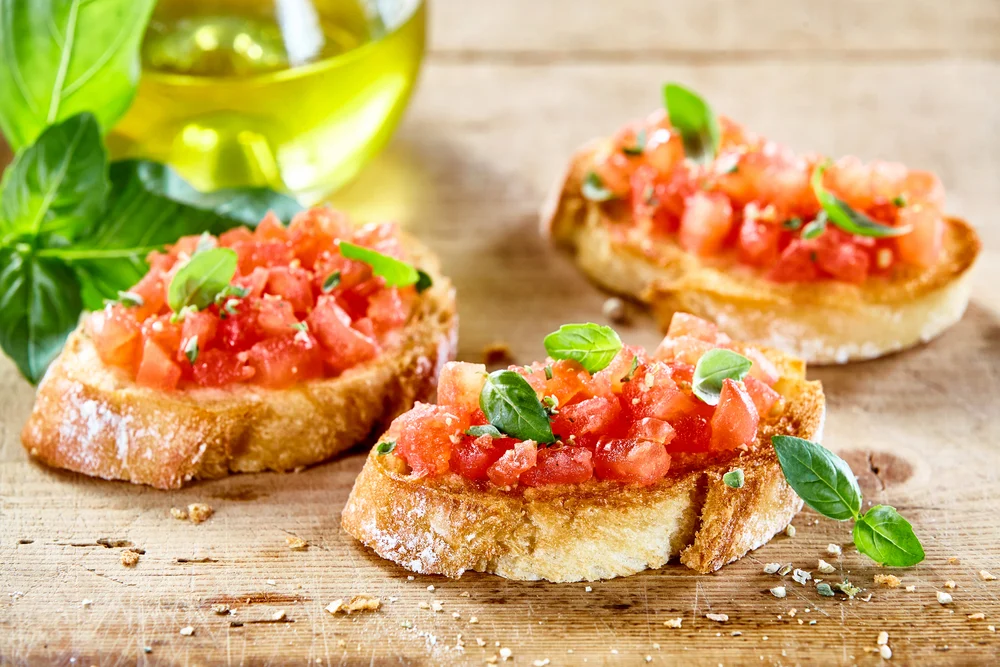

Ingredientes
- 4 fatias de pão italiano
- 2 tomates maduros picados
- 2 dentes de alho
- Folhas de manjericão fresco
- Azeite de oliva a gosto
- Sal e pimenta a gosto
Modo de Preparo
- Torre as fatias de pão até ficarem crocantes.
- Esfregue os dentes de alho nas fatias de pão ainda quentes.
- Em uma tigela, misture os tomates picados com azeite, sal, pimenta e manjericão.
- Coloque a mistura sobre as fatias de pão.
- Finalize com um fio de azeite e sirva imediatamente.